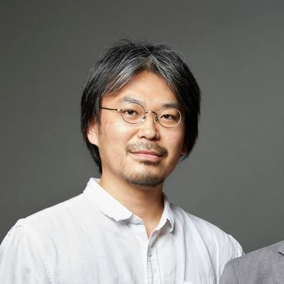
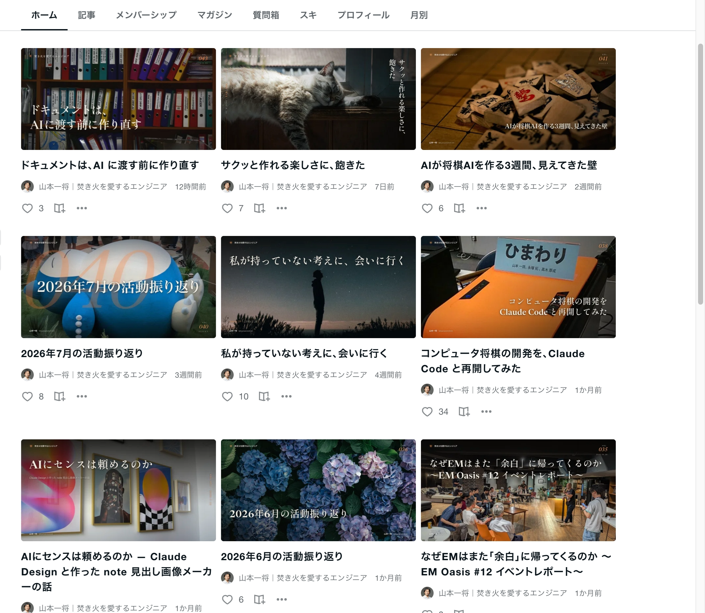
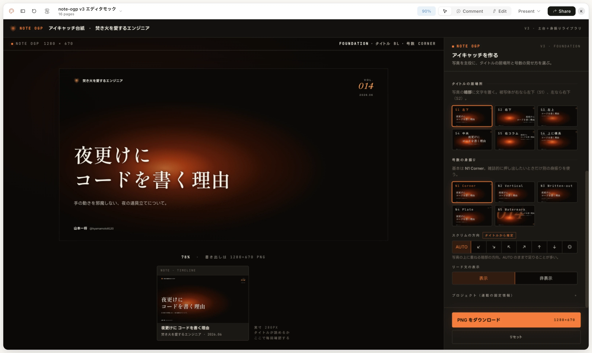
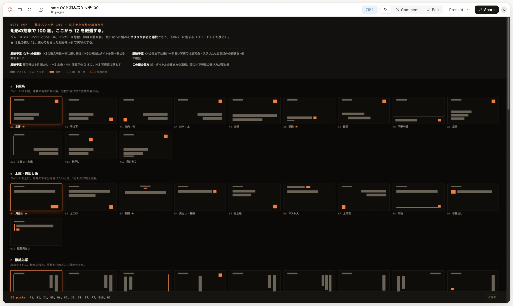
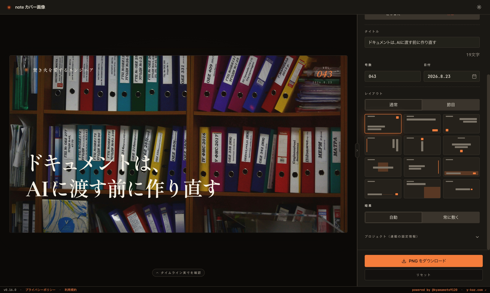

01 · title title-stage · role:title
idea: この 10 分の主張をタイトルとして掲げる
idea: この 10 分の主張をタイトルとして掲げる
山本一将です。「なんでも作れる時代に、作らないものを決める」というタイトルでお話しします。
今日は業務の話ではなく、趣味で作っているツールの話をします。
【15秒】
02 · profile profile-stage · role:content
idea: 毎週 note を書く人間である、という伏線を趣味の欄で渡す
idea: 毎週 note を書く人間である、という伏線を趣味の欄で渡す
MOSH でエンジニアリングマネージャーをしています。
趣味のところに書きましたが、毎週 note を書いています。今日の話はここから始まります。
【25秒】

自己紹介
山本 一将｜焚き火を
MOSH株式会社 Engineering Manager

X: @kyamamoto9120
略歴
鉄道システム開発、
実績
2015年 世界コンピュータ将棋選手権 9位
2024年 LINE API Expert 認定
2024年 LINE API Expert 認定
趣味
ヤクルトスワローズ、
毎週
毎週
03 · ch1-open statement-stage · role:transition
idea: 今日の問いをこれから投げる、と宣言する
idea: 今日の問いをこれから投げる、と宣言する
いきなりですが、みなさんに聞きたいことがあります。
【8秒】
04 · are-you-choosing statement-stage · role:content
idea: 実装する機能を厳選できているか、を聴衆に直接問う
idea: 実装する機能を厳選できているか、を聴衆に直接問う
実装する機能、厳選できていますか。
欲しいと思ったものが、その日のうちに動く時代です。楽しいですよね。
ただ、作った数は増えているのに、日常的に使っているものは増えていません。
作った時点で満足して、二度と開いていないものがいくつもあります。
足すコストがタダになった瞬間、私は選ぶのをやめていました。
【25秒】
作れる時代
実装する
厳選できていますか？
厳選できていますか？
05 · open-question statement-stage · role:content
idea: 作れる量と良さが一致しないのではないか、という問いを立てる
idea: 作れる量と良さが一致しないのではないか、という問いを立てる
言い換えると、こういう問いです。
作れるものを全部作ったら、良いものになるのか。
（間を取る。聴衆に考えてもらう）
今日はこの問いを、趣味で作っているツールの話を通して考えます。
【20秒】
作れる時代
作れる
良い
良い
06 · ch2-open statement-stage · role:transition
idea: 事例の前提に降りる
idea: 事例の前提に降りる
さっきの自己紹介の続きです。
【8秒】
07 · hardest-part statement-stage · role:content
idea: いちばん辛いのは執筆ではなく見出し画像だった、という出発点を渡す
idea: いちばん辛いのは執筆ではなく見出し画像だった、という出発点を渡す
毎週書いていていちばん辛いのは、実は記事を書くことじゃありません。見出し画像です。
毎週これで止まります。書き終わっているのに公開できない。
【25秒】
作りたかったもの
いちばん辛いのは
見出し画像を
見出し画像を
記事を
08 · three-wants list-stage · role:content
idea: 求めていた見出し画像の要件を 3 つに言語化した
idea: 求めていた見出し画像の要件を 3 つに言語化した
28 本たまったところで、自分が何を欲しがっているのかを言葉にしました。3 つあります。
かっこいいこと。世界観が統一されていること。それでいて、飽きないこと。
3 つ目が厄介です。統一しろと言いながら、飽きるなと言っている。
連載だと分かるかどうかは、2 つ目の世界観のほうで担保されます。
【30秒】
作りたかったもの
欲しかったのは、
- かっこいい
- 世界観が
統一されている - それで
いて、 飽きない
09 · twelve-in-a-row statement-stage · role:content
idea: 1 枚単体ではなく、並んだときの見え方が判断基準だった
idea: 1 枚単体ではなく、並んだときの見え方が判断基準だった
それで基準をこう置きました。1 枚で格好良いことではなく、12 枚並べて格好良いこと。
参考にしたのは雑誌の表紙です。バックナンバーが棚に並んだときに、揃っていて、しかも飽きない。
毎号タイトルが同じ位置にあったら、並べたときに飽きるんです。号ごとに動きが要る。
【25秒】
作りたかったもの
12 枚
ベンチマークに
10 · timeline-proof image-stage · role:content
idea: 実際に並べたときの見え方を実物で見せる
idea: 実際に並べたときの見え方を実物で見せる
これが直近 9 週間です。タイトルが左下にあったり、右上に縦組みで入っていたり、中央にあったり。
世界観は揃っているのに、並べても飽きない。ここを作りたかった。
【30秒】
作りたかったもの
直近 9 週間の

11 · why-build statement-stage · role:content
idea: 既製品を試したうえで、並べたときの格好良さに届かず自作した
idea: 既製品を試したうえで、並べたときの格好良さに届かず自作した
最初から作ろうとしたわけではありません。まず画像生成 AI を試しました。文字が制御できない。
次に Canva を使いました。工数は確かに減りました。でも、並べたときに格好良くならない。
テンプレートを選んでいる限り、12 枚並んだときの動きは設計できないんです。
【30秒】
作りたかったもの
並べた
既製品では
既製品では
画像生成 AI は
12 · build-it-myself statement-stage · role:content
idea: テンプレートを選ぶのをやめ、自分の要件に合わせて道具から作った
idea: テンプレートを選ぶのをやめ、自分の要件に合わせて道具から作った
それで、既製品を使うのをやめました。テンプレートを選ぶのではなく、道具のほうから作る。
私はデザイナーではないので、理想の UI を自力で設計する力はありません。
でも、何が気持ち悪いかなら言葉にできます。そこを Claude Design にぶつけながら作りました。
作れる時代になったからこそ選べた道です。ここまでは良かったんですが。
【20秒】
作りたかったもの
テンプレートを
道具から
道具から
デザインは
13 · ch3-open statement-stage · role:transition
idea: 失敗の局面に移る
idea: 失敗の局面に移る
（間）
【8秒】
14 · chaos-editor image-stage · role:content
idea: 満足できずに設定項目を増やし続けた時期を、実際の画面で見せる
idea: 満足できずに設定項目を増やし続けた時期を、実際の画面で見せる
出てくる画像に満足できなくて、選べる幅を広げる方向に舵を切りました。
タイトルの居場所が 6 通り、号数の見せ方が 5 通り、スクリムの方向、リード文の表示。
別のバージョンでは、台紙のパターン、テーマ、カラー、書体、装飾まで選べるようにしました。
自分では、機能を足しているつもりでした。
【30秒】
迷走
全部

15 · deleted-all statement-stage · role:content
idea: 選択肢を増やした結果、毎週の作業が重くなり、一度すべて消した
idea: 選択肢を増やした結果、毎週の作業が重くなり、一度すべて消した
使ってみてすぐ分かりました。重い。
6 通りから選んで、5 通りから選んで、方向を決めて、書体を決めて。毎週これをやるのかと。
選べる幅が広がるほど、決めるのに時間がかかります。楽にするために作ったのに、逆でした。
それで、設定項目を一度、全部消しました。
【25秒】
迷走
毎週が
一度、
一度、
選べる
16 · hundred-sketches image-stage · role:content
idea: レイアウトの型だけを 100 パターン並べて比較した
idea: レイアウトの型だけを 100 パターン並べて比較した
作り直しで最初にやったのがこれです。レイアウト案を 100 個並べてもらいました。
この物量は、人間のデザイナーには頼めません。
【30秒】
作り直し
矩形だけで、

17 · motion-only statement-stage · role:content
idea: 写真も文字も入れないのは、並んだときの動きだけを見るため
idea: 写真も文字も入れないのは、並んだときの動きだけを見るため
写真もタイトルも入れず、グレーとオレンジの矩形だけにしています。
中身が入っていると、写真の良し悪しに引っ張られて形を判断できません。
見たかったのは 1 枚の完成度ではなく、並べたときにどう動くかです。だから形だけにしました。
【25秒】
作り直し
見たいのは、
並んだ
並んだ
写真も
18 · only-twelve statement-stage · role:content
idea: 100 から 12 に絞り、渡すのはその 12 だけにすると決めた
idea: 100 から 12 に絞り、渡すのはその 12 だけにすると決めた
100 から 12 を選びました。12 という数字自体に意味はありません。
12 あれば、毎週選んでもそうそう被らない。そのくらいの感覚です。
大事なのは、選んだ 12 以外は渡さないと決めたことです。
【25秒】
作り直し
100 から
それだけを
それだけを
12
19 · who-decides versus-stage · role:content
idea: 自由な設定 UI も作れたが、決めるのは作る側の仕事だと判断した
idea: 自由な設定 UI も作れたが、決めるのは作る側の仕事だと判断した
ここが今日の核心です。
12 が分かったなら、配置も書体も自由にいじれる UI を作ることもできました。AI に投げれば作れます。
でもそうしませんでした。12 だけ渡す、と決めました。
自由を渡すというのは、決めることを使う人に押しつけているだけです。
並べたときに格好良くしたいのは私なので、私が決めておくべきでした。
【35秒】
作り直し
自由を
使う
- 配置も
書体も 自由 - 毎週、
全部を 決める
作る
- 12 パターンだけ渡す
- 毎週、
選ぶだけ
20 · current-editor image-stage · role:content
idea: 厳選した結果、入力は 3 つとレイアウト選択だけになった
idea: 厳選した結果、入力は 3 つとレイアウト選択だけになった
いまの画面です。タイトル、号数、日付を入れて、レイアウトを選ぶだけ。
画像探しは相変わらず大変ですが、それ以外の労力は相当軽くなりました。
【25秒】
作り直し
いまは、

21 · ch4-open statement-stage · role:transition
idea: 一般論に上げる
idea: 一般論に上げる
誰にも頼まれていない、趣味のツールです。
なぜここまでやるのか。
【8秒】
22 · no-differentiation statement-stage · role:content
idea: 機能をいくら足しても差別化にならない、と冒頭の問いに答える
idea: 機能をいくら足しても差別化にならない、と冒頭の問いに答える
最初の問いに戻ります。作れるものを全部作ったら、良いものになるのか。
ならないと思っています。理由は、機能では差がつかなくなったからです。
技術が進んで機能の差が縮まることを、コモディティ化と言います。
AI で誰でも同じものを作れるようになった今、これが一気に進みました。
機能を足す競争は、勝てない競争です。
【25秒】
なぜここまでやるのか
機能を
差別化には
差別化には
同じ
23 · emotional-value-word statement-stage · role:content
idea: 機能の数では測れない価値に名前を与える
idea: 機能の数では測れない価値に名前を与える
（間）
じゃあ何で差がつくのか。情緒的価値、という言葉があります。
【10秒】
なぜここまでやるのか
情緒的価値
24 · emotional-value-def versus-stage · role:content
idea: 情緒的価値と機能的価値の性質の違いを対比で示す
idea: 情緒的価値と機能的価値の性質の違いを対比で示す
機能的価値は、商品やサービスの客観的・実用的な性能です。処理速度、項目数、対応形式。
数値や仕様で言えます。言えるということは、真似できるということです。
情緒的価値は、感覚的・心理的な価値です。所有する喜び、使うときの高揚感、
ブランドの背景にあるストーリーへの共感。数値で言えないので、真似できません。
機能だけで戦うと、最後は価格競争になります。情緒的価値は、そこに巻き込まれません。
【35秒】
なぜここまでやるのか
数値で
機能的価値
- 処理速度、
項目数 - 数値で
言えるから、 模倣される - 最後は
価格競争に なる
情緒的価値
- 所有する
喜び、 使う ときの 高揚感 - 数値で
言えないから、 模倣されない - 価格競争に
巻き込まれない
25 · what-i-got list-stage · role:content
idea: 機能を削った結果として、このツールで何を得たのかを具体で示す
idea: 機能を削った結果として、このツールで何を得たのかを具体で示す
では自分のツールはどうか。機能を削って生まれたのは、この 3 つでした。
毎週、楽に作れる。ここまでは機能的価値です。分かりやすいけれど、真似できます。
でも、出てくるものがかっこいい。そして、人に見せたくなる。
これは数値で言えません。真似される種類のものでもありません。
レイアウトを 12 に絞ったこと自体は、小さな判断です。一つでは価値になりません。
でも積み重なると、こうなります。
【30秒】
なぜここまでやるのか
削って、
- 毎週、
楽に 作れる - 出てくる
ものが、 かっこいい - 人に
見せたくなる
26 · talk-about-it statement-stage · role:content
idea: 人に話したくなることが、真似できない差別化になっている
idea: 人に話したくなることが、真似できない差別化になっている
そして、いちばん自分でも意外だったのがこれです。使っていると、人に話したくなる。
誰にも頼まれていない、趣味のツールの話です。それを今日、こうして話しに来ています。
なぜ話したくなるのか。判断が自分の中にあるからだと思います。
Canva でテンプレートを選んで作っていたら、話すことは何もありません。
100 案を並べて 12 に絞った、自由な設定 UI は作らないと決めた。
その判断があるから、語る中身があります。
機能は真似できます。でも、話したくなる理由は真似できません。
【25秒】
なぜここまでやるのか
使っていると
人に
人に
今日
27 · human-decides statement-stage · role:content
idea: 体験を決める仕事は人間に残り、その責任も人間にある
idea: 体験を決める仕事は人間に残り、その責任も人間にある
機能を実装するのは、もう AI の仕事です。速いし、正確です。
でも、何を渡すか、何を渡さないかを決めているのは人間です。
裏を返すと、使いにくいものが出てきたとき、AI が作ったからとは言えません。
さっきの重い画面も、AI のせいではなくて、私が決めなかったせいです。
【30秒】
なぜここまでやるのか
体験を
機能を
機能を
出てきた
28 · summary list-stage · role:content
idea: 3 点にまとめて持ち帰らせる
idea: 3 点にまとめて持ち帰らせる
まとめます。
機能を足しても差別化にはなりません。誰でも同じものを作れるようになったからです。
だから、何を作らないかを決めるのが人間の仕事として残ります。
そして削ると、真似できない価値が生まれます。人に話したくなる、というのがまさにそれでした。
【25秒】
なぜここまでやるのか
まとめ
- 機能を
足しても、 差別化には ならない - 何を
作らないかを 決めるのが、 人間の 仕事 - 削ると、
真似できない 価値が 生まれる
29 · closer statement-stage · role:closer
idea: 冒頭の問いに答えを返して閉じる
idea: 冒頭の問いに答えを返して閉じる
最初の問いに戻ります。作れるものを全部作ったら、良いものになるのか。
私の答えはこれです。作れるものを、全部作らない。
次に機能を足したくなったとき、作れるかどうかではなく、渡すかどうかを決めてみてください。
あなたは、何を渡しますか。ありがとうございました。
【20秒】